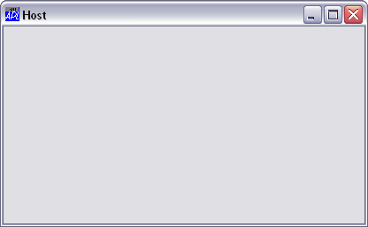
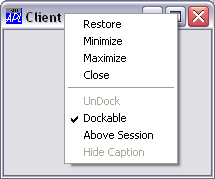
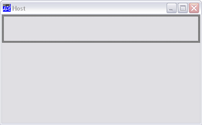
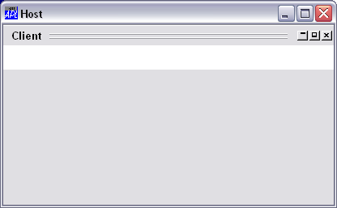
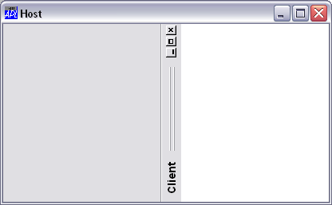
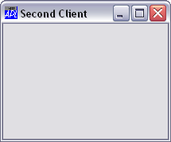
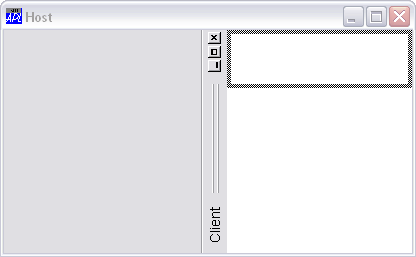
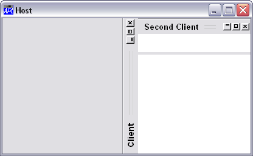

The following example illustrates the effect of docking one Form in another.
'Host' ⎕WC 'Form' 'Host' Host.DockChildren←'Client'

'Client' ⎕WC 'Form' 'Client' Client.Dockable←'Always'

Notice that a dockable Form is indistinguishable in appearance between any other top-level Form except that it has additional items in its pop-up context (right mouse button) menu as shown.
The following picture shows the effect of dragging the Client Form to the top edge of the Host, just before the mouse button is released.

The next picture shows the result after docking. The Client Form has become a SubForm (white is the default background colour for a SubForm) called Host.Client.

The third picture illustrates the effect of docking the Client on the left-hand edge.
The following picture shows the Client Form docked as a SubForm along the right edge of the Host Form.

It is also possibleto dock a Form into an already docked Form.
'Client2' ⎕WC 'Form' 'Second Client' Client2.Dockable←'Always'

which we can make dockable in both the Host Form and the Host.Client SubForm:
Host.DockChildren Host.Client.DockChildren←⊂'Client2'
The next picture shows Client2 about to be docked in the Client SubForm:

And finally, after it has been docked.
